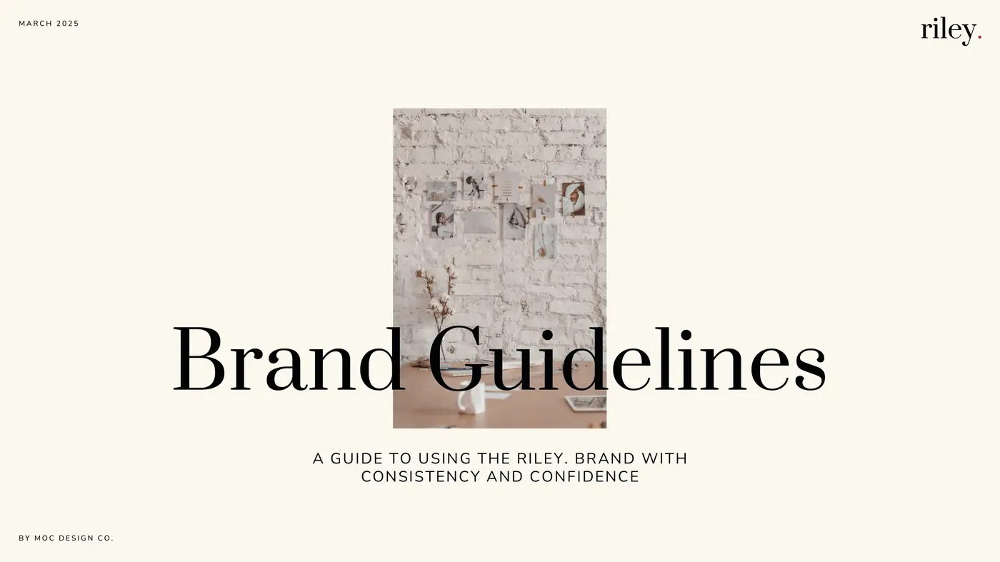
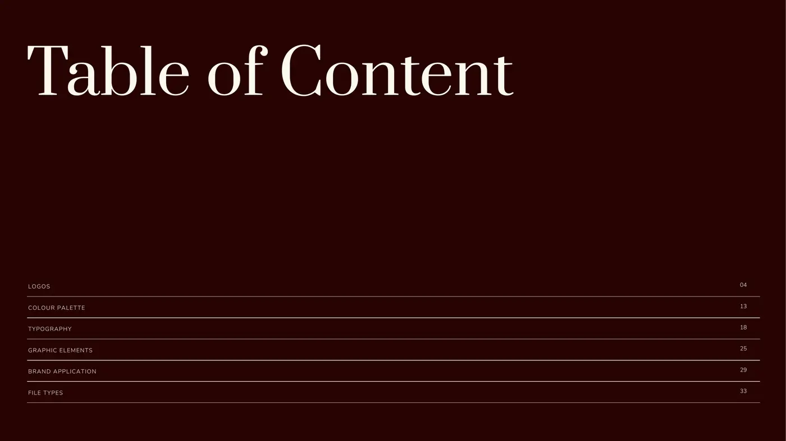
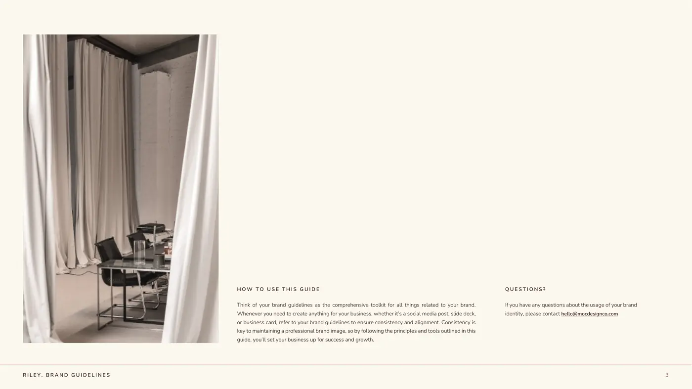

Comparable turnaround
2–3 weeks → 1–2 days
Comparable ad hoc collateral, from a complete request entering the workflow.
What this includes
Once the request entered the structured workflow, depending on urgency.
Portfolio design system / Version 2
A shared reference for Megan O’Connor’s portfolio. One typography hierarchy, two reading layouts and a small family of surfaces. The system supports page-by-page revisions.
Reference page only. Existing case studies have not been migrated. Summary fields are copy prompts; the interaction examples reuse existing work and clearly identify their source.
Use a light surface change when a new chapter begins. Keep related subsections on that chapter’s surface. Black marks one major conclusion or result, rather than every card or comparison.
Example sequence, not an automatic stripe pattern. Soft is for a supporting panel or a quieter chapter. Paper cards sit on Background, Soft or Warm; cards inside a Paper section can stay transparent.
01 / Typography
Headings establish structure. Paragraphs explain the work. Labels identify the section. Opening paragraphs use exactly the same type treatment as the paragraphs that follow.
Page title
Section heading
A genuine subsection
Use regular paragraph text for the narrative. Emphasise a specific responsibility or result when it helps someone skim. A new paragraph does not need a new size, weight or colour.
Supporting context belongs close to its image or evidence.
My role
02 / Split section
This paragraph starts level with the heading, not the label. The two columns have enough space to remain distinct, while the shared top alignment makes their relationship clear.
The layout is for reading and scanning. The heading stays in the document flow. On smaller screens, the label, heading and body become a single column.
02 / Stacked section
The stacked pattern places the label, heading and narrative on one left alignment. Use it for a concise explanation before a visual, or when an opposing column would unnecessarily separate the content.
This paragraph uses the same 16px type and spacing as the split example. There is no intermediate display paragraph.
03 / At a glance
The summary replaces the existing four-field band at the bottom of a case-study hero. It keeps the thin rule and compact labels, with five aligned columns on desktop. The row grows in height to fit the approved copy, rather than splitting into mismatched rows.
Layout example. Replace these prompts with Megan’s approved project copy before using the band on a case study.
Surface example / Deliberate emphasis
A dark surface can mark a substantial change in subject or highlight an important conclusion. It does not create a new text hierarchy. The same heading, paragraph and spacing rules still apply.
Project imagery and diagrams retain their own colours. Neutralising the portfolio interface does not mean removing the identity from the work.
04 / Cards and interactions
Keep the result or short explanation visible. Offer supporting detail through one clear disclosure. Hover previews it on a mouse, focus previews it for keyboard users, and a click or tap keeps it open.
Alternative treatment for the supplied “Operational shift” screenshot. These figures and qualifications come from the existing creative operations case study; they are not new claims.
Comparable turnaround
2–3 weeks → 1–2 days
Comparable ad hoc collateral, from a complete request entering the workflow.
Once the request entered the structured workflow, depending on urgency.
Hands-on effort
11–12 hrs → 2–3 hrs
A conservative comparison of internal handling time.
Coordination, copy, routine design, review routing, status updates and publishing.
Estimated reduction
~75–80%
Estimate for comparable routine collateral.
Internal handling time, with human oversight retained at quality-critical points.
The current route uses a frame around a frame, eight narrow cells and a separate dark version. This alternative uses two open columns, clear step names and small disclosures. Longer workflows can use the same structure with a horizontal step rail.
Before / Reactive route
Often arrived through Slack or conversation without complete inputs.
Chasing audience, objective, technical information and answers across people and time zones.
The usable brief emerged through the information-gathering process.
After / Structured route
The case study explains how required inputs entered the workflow before ad hoc work reached creative. Recurring marketing content followed a separate planned cadence.
This is a condensed layout example. It does not replace the full workflow or its evidence.
Underline the selected tab instead of filling an entire box black. Each point gets its own image and regular paragraph text. Switching happens on click or keyboard selection, not hover.
Live operation
Publication targets, production stage, dependencies, content pillars, industry and SME reviewers lived in one operational view.
Better inputs
The brief captured audience, purpose, message, problem, VeUP point of view, technical notes, supporting material, deliverable, CTA and timeline.

Clear handoffs
Production SOP evidence from the creative operations case study.

05 / Media patterns
Use a horizontal gallery for a series, a small static arrangement for one clear point, tabs for different ideas, and a document viewer for material that needs to be read in order.
Existing Riley imagery, in a gallery pattern informed by Selected Visual Work. Swipe, drag, use the arrows, or focus the gallery and use Left/Right.


Use the full content width for a visual that deserves room. Keep the caption beneath the image and use a restrained hover expansion, following Riley’s packaging treatment.
When two images explain the design decision, keep them visible together. Do not add a carousel simply because the component exists.


Riley’s viewer displays rendered guideline pages, rather than embedding a PDF. Keep that readable page sequence, visible scrolling and an option to expand. This demonstration uses its first three pages.



The existing VeUP board deck from Selected Visual Work. The browser provides the PDF’s scrolling and zoom controls.